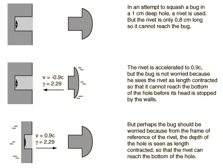

The Bug-Rivet Paradox
The bug-rivet paradox is a variation on the twin paradox and is similar to the pole-barn paradox in that the ideas of simultaneity in relativity must be addressed. The fact that two events are simultaneous in one frame of reference does not imply that they are simultaneous as seen by an observer moving at a relativistic speed with respect to that frame.

To calculate the times for the two frames of reference, consider the rivet entering the hole and set t=t'=0 at that instant and x=x'=0 to establish the coordinate system. In the events described below, x' and t' refer to the rivet frame while x and t refer to the bug frame. The relativity factor γ = 2.29 and the Lorentz transformation is used to transform quantities from one frame to the other.
Rivet frame of reference
The rivet is considered to the be the reference frame, and x' and t' are used for positions and times.
- End of rivet enters hole: t' = 0
- Rivet head hits wall: t' = 0.8 cm/0.9c = 29.63 ps
- Rivet end hits length-contracted bottom of hole: t' = 1 cm/0.9cg = 16.14 ps
|
The end of the rivet hits the bottom of the hole before the head of the rivet hits the wall. So it looks like the bug is squashed.
|
Transforming the times to the bug's frame of reference:
- End of rivet enters hole: t = 0
- Rivet head hits wall: t = γ(t'+vx'/c2) = 2.29(29.63 ps + (-0.9c)(0.8 cm)/c2) = 12.9 ps
- Time for rivet to reach end of hole: t = 2.29(16.14 ps) = 37.04 ps
|
The bug disagrees with this analysis and finds the time for the rivet head to hit the wall is earlier than the time for the rivet end to reach the bottom of the hole. The paradox is not resolved.
|
Bug frame of reference
- Front of rivet enters hole: t = 0
- Head of rivet hits wall: t = 0.8 cm/0.9cγ = 12.91 ps
|
All this is nonsense from the bug's point of view. The rivet head hits the wall when the rivet end is just 0.35 cm down in the hole! The rivet doesn't get close to the bug.
|
Transforming the times measured in the bug's frame of reference to the rivet frame:
- Rivet head impact time t' = γ(12.9 ps) = 29.63 ps
- Rivet end in bug frame is simultaneously at x=-.35 cm, but it is not simultaneous in the rivet frame. Transforming gives t' =γ(12.9 ps - .9c(.0035)/c2) = 5.63 ps.
- If you try to find a rivet frame time when the rivet end hits the bottom of the hole, x = -1 cm, t' =γ(37.04 ps - .9c(.01)/c2) = 16.14 ps.
|
Transforming times from the bug frame to the rivet frame gives a time for the end to reach -0.35 cm before the rivet head hits, and even suggests that it reaches the bottom of the hole before the rivet head hits. The paradox is not resolved.
|
|